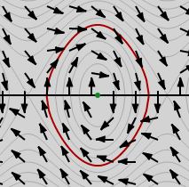

On s'intéresse aux équations du type θ′′+aθ′+bsin(θ)=0,
où a et b sont des nombres réels. Il s'agit de l'équation
décrivant le mouvement d'un modèle simple de pendule
amorti - très classiquement étudié en mécanique du
point. Hors cas particulier, on ne peut pas trouver
d'expression pour la solution exacte de cette équation. Effectuer une simulation permet alors de comprendre un peu mieux ce système.
Vous pouvez utiliser le formulaire ci-dessous pour
modifier les valeurs de a, b et les conditions initiales. Cliquez alors sur simulerLa méthode du point milieu, d'ordre 2, est
utilisée pour toutes les simulations.. Il
est également possible de cliquer sur le
portrait de phase pour démarrer une simulation.
Une solution approchée sera tracée, ainsi que son
portrait de phase (avec les lignes de conservation de
l'énergie).
En pointillés bleus apparait la simulation de l'équation
où sin(θ) a été remplacé par θ. On constate
que pour de petits angles, elle est proche de la
simulation de l'équation de départ. Cela devient faux dès
que l'angle augmente (entre autres, la fréquence d'oscillation du pendule n'est plus la même...).
La fenêtre d'animation permet de visualiser le résultat en mouvement.
Le portrait de phase
Le portrait de phase permet de visualiser l'évolution d'un
système régi par une équation différentielle de, mais est
également un outil théorique fondamental. Dans cette
section, je présente l'idée sous jacente, ainsi que
quelques résultats.
Généralités
Partons de l'équation qui régit le comportement de
notre système : θ′′+aθ′+bsin(θ)=0(E).
On voit immédiatement que (E)équivaut au système suivant:
{θ′=vv′=−av−bsin(θ)
où v est simplement une nouvelle notation pour θ′.
Cela peut se réécrire (θ,v)′=(v,−av−bsin(θ)).
On a donc remplacé une équation différentielle du
second ordre par une équation différentielle du
premier ordre, mais portant sur le vecteur (θ,v)∈R2.
L'espace dans lequel évolue ce vecteur (ici R2) est appelé l'espace
des phases.
Une condition initiale, du type (θ(0),θ′(0))=(t0,v0) se réécrit (θ(0),v(0))=(t0,v0) : c'est un point dans l'espace des phases.
L'évolution du système correspond à une
trajectoire dans l'espace des phases, partant des
conditions initiales.
À tout moment,
on a (θ,v)′=(v,−av−bsin(θ)) : si la
trajectoire passe par un point de coordonnées (x,y),
sa tangente y est forcément colinéaire à (y,−ay−bsin(x)). Ces vecteurs sont tracés sur l'espace
des phases lorsque vous lancez une simulation (sans
entrainement circulaire). Cliquer sur un point de
celui-ci pour démarrer une simulation, et constater la
colinéarité annoncée.
Quelques résultats
Cet espace donne une bonne intuition de quelques
résultats fondamentaux sur les équations
différentielles.
Le théorème de Cauchy-Lipschitz,
affirme - sous certaines conditions assez peu
restrictives - l'existence et l'unicité de la solution
d'une équation différentielle munie de conditions
initialesAttention, ceci n'est pas un énoncé mathématique précis !. En
particulier, si l'on clique sur le même point
plusieurs fois dans l'espace des phases du simulateur,
on obtiendra toujours la même trajectoire, qui doit
nécessairement «suivre les flêches». Ceci indique que le système est fondamentalement déterministe : si l'on connait parfaitement les conditions initiales, on connait en théorie sa trajectoire. En théorie seulement, car des phénomènes chaotiques peuvent s'en mêler...
Une autre conséquence de ce théorème est que 2 trajectoires ne se croisent jamaisElles peuvent en revanche se «recouvrir» partiellement - c'est par exemple le cas si on considère 2 fois la même trajectoire, mais avec un décalage du temps initial. dans l'espace des phases.
Le théorème de Poincaré-Bendixon est un deuxième résultat très intéressant, interprétable sur l'espace des phases. Obervez le portrait de phase dans le cas d'un coefficient de frottement a>0, et particulièrement une ligne iso-énergie fermée.
 Au niveau de cette ligne,
les flêches sont rentrantes, ce qui signifie
intuitivement qu'une trajectoire ne pourra jamais
s'échapper de la partie située à l'intérieur de cette
ligne (physiquement, cela signifie que l'énergie du
système décroit). Dans ce cas, le théorème affirme qu'il y a 2 situations possibles :
Soit le système converge vers un point limite (c'est le cas ici).
Soit il converge vers un cycle limite. L'exemple classique est l'oscillateur
de Van der Pol - intervenant en électronique.
En particulier, les comportements chaotiques sont exclusLe théorème n'est vrai qu'en dimension 2 : si l'on considère un système où l'espace des phases est de dimension 3 ou plus - comme le pendule double - on peut voir apparaitre de tels phénomènes. !
Et dans le cas d'un système avec entrainement
circulaire ?
La différence essentielle est que les équations
différentielles obtenues dépendent maintenant du temps - on dit qu'elles ne sont plus autonomesLes systèmes fermés sont généralement autonomes - ce qui traduit le fait que les lois de la physique sont les mêmes que l'on soit à un temps t1 ou à un temps t2≠t1. Dès que l'on a une interaction avec l'extérieur qui dépend du temps, on perd cette autonomie..
Les flêches qui guident les trajectoires sur l'espace des phases vont donc tourner en fonction du temps, et les trajectoires deviennent par conséquent beaucoup plus difficiles à étudier. En particulier, on perd les 2 théorèmes ci-dessus, et l'on peut voir apparaitre des phénomènes chaotiques. Le simulateur vous permet de tester un peu tout cela.